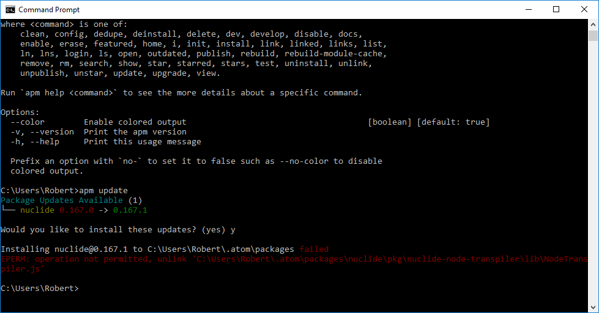
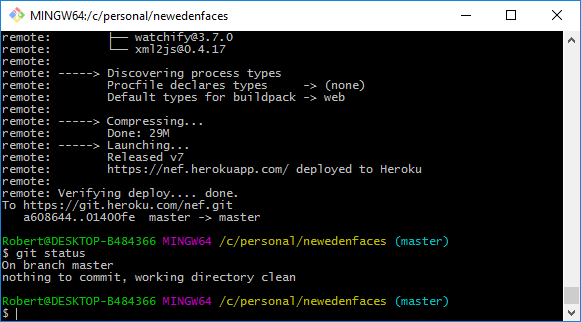

HTML + CSS versions of CMD and Git Bash on Windows 10
CMD Screenshot (for comparison):
CMD in HTML5 + CSS3:
Command Prompt
where <command> is one of:
clean, config, dedupe, deinstall, delete, dev, develop, disable, docs,
enable, erase, featured, home, i, init, install, link, linked, links, list,
ln, lns, login, ls, open, outdated, publish, rebuild, rebuild-module-cache,
remove, rm, search, show, star, starred, stars, test, uninstall, unlink,
unpublish, unstar, update, upgrade, view.
Run `apm help <command>` to see the more details about a specific command.
Options:
--color Enable colored output [boolean] [default: true]
-v, --version Print the apm version
-h, --help Print this usage message
Prefix an option with `no-` to set it to false such as --no-color to disable
colored output.
C:\Users\Robert>apm update
Package Updates Available (1)
└── nuclide 0.167.0 -> 0.167.1
Would you like to install these updates? (yes) y
Installing nuclide@0.167.1 to C:\Users\Robert\.atom\packages failed
EPERM: operation not permitted, unlink 'C:\Users\Robert\.atom\packages\nuclide\pkg\nuclide-node-transpiler\lib\NodeTranspiler.js'
C:\Users\Robert>_
Don't believe it? View the source code
Git Bash Screenshot (for comparison):
Git Bash in HTML5 + CSS3:
remote: └── watchify@3.7.0
remote: └── xml2js@0.4.17
remote:
remote: -----> Discovering process types
remote: Procfile delclares types -> (none)
remote: Default types for buildpack -> web
remote:
remote: -----> Compressing...
remote: Done: 29M
remote: -----> Launching...
remote: Released v7
remote: https://nef.heroku.com/ deployed to Heroku
remote:
remote: Verifying deploy.... done.
To https://git.heroku.com/nef.git
a608644..01400fe master -> master
Robert@DESKTOP-B484366 MINGW64 /c/personal/newedenfaces (master)
$ git status
On branch master
nothing to commit, working directory clean
Robert@DESKTOP-B484366 MINGW64 /c/personal/newedenfaces (master)
$ |